Показано товари: 18
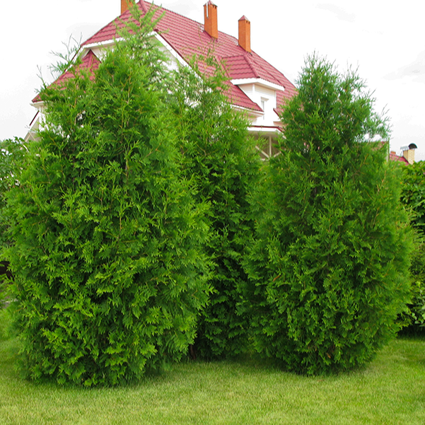
Туя Brabant (140–160 см)
Швидкоросла хвойна рослина з колоноподібною формою, що ідеально підходить для створення живоплотів завдяки щільній, яскраво-зеленій хвої, яка частково зберігає свій колір взимку.
1000 ₴
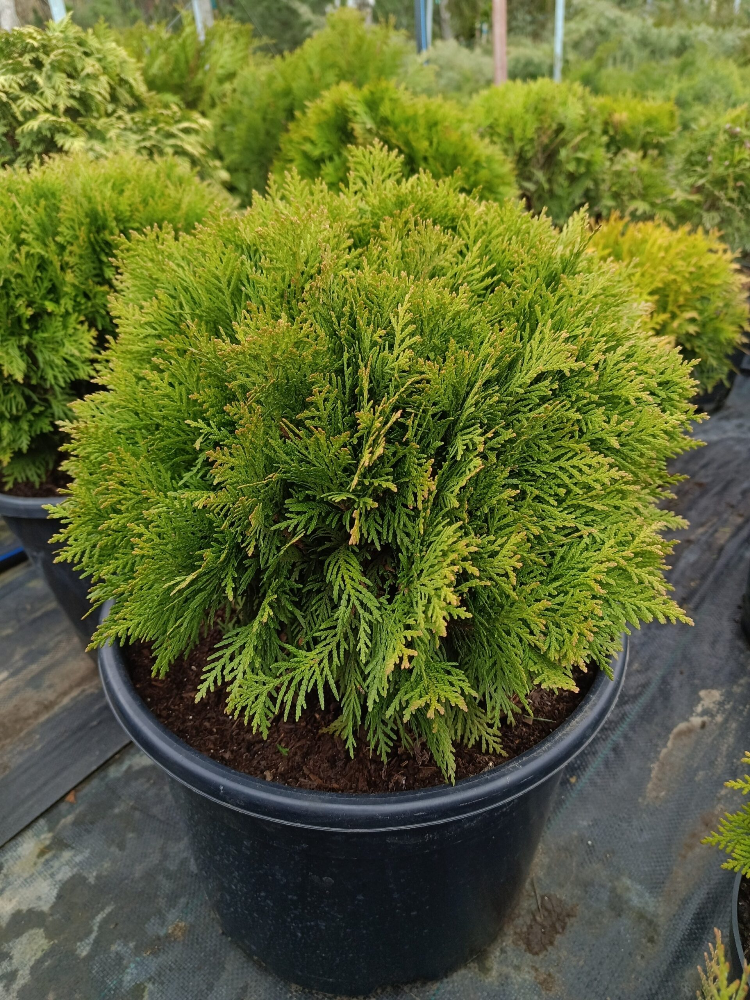
Туя Danica (45–50 см)
Мініатюрний, повільно зростаючий сорт, що відрізняється ідеальною кулястою формою та щільною, насичено-зеленою лускатою хвоєю.
450 ₴
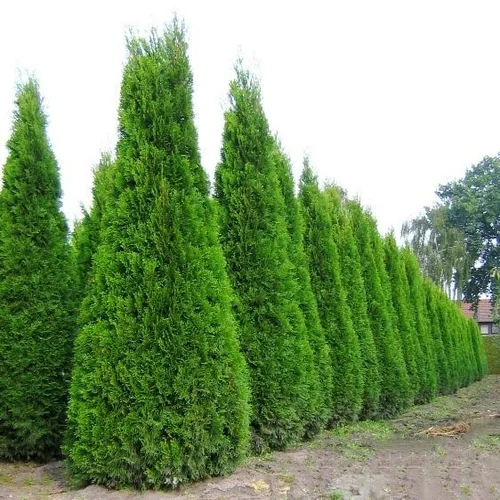
Туя Columna 160–180 см
Класичний, високорослий сорт з дуже вузькою та елегантною колоноподібною кроною, який має темно-зелену блискучу хвою, що зберігає свій насичений колір навіть узимку.
1200 ₴
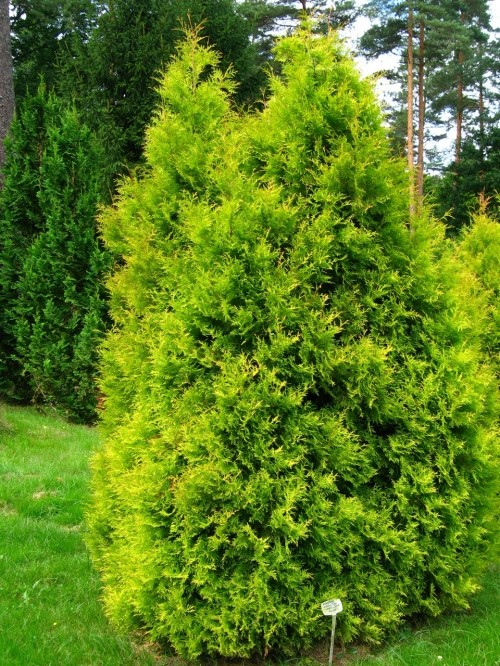
Туя Kornik (80–90 см)
Швидкорослий, декоративний сорт із широкою конусоподібною або яйцеподібною кроною та характерною особливістю: кінчики її зеленої хвої влітку набувають яскраво-золотистого, майже жовтого відтінку.
350 ₴
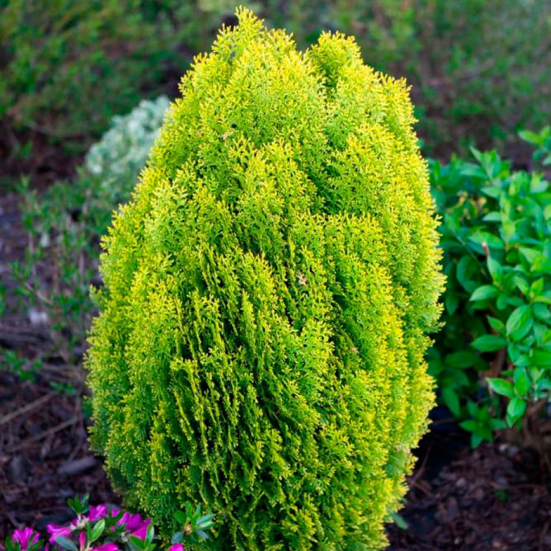
Туя Aurera Nana (30-40 см)
Карликовий, повільно зростаючий сорт, що формує компактну, щільну, округло-яйцеподібну крону та приваблює хвою, яка протягом усього сезону має яскравий золотисто-жовтий колір.
359 ₴
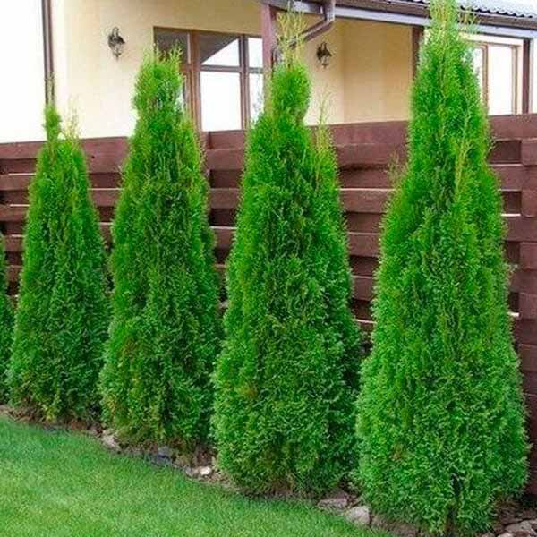
Туя Smaragd (140–160 см)
Один із найпопулярніших сортів, що формує ідеально вузьку, пірамідальну (смарагдову) крону та має соковиту, густу хвою, яка зберігає свій насичений, яскраво-зелений колір протягом всієї зими.
850 ₴
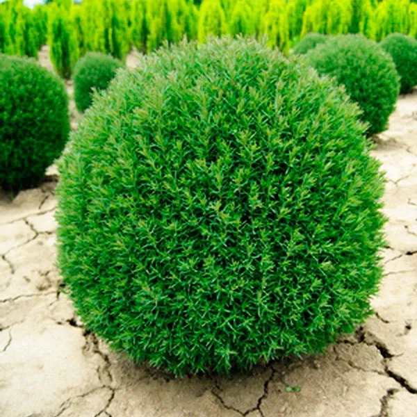
Туя Teddy (70–80 см)
Унікальний карликовий сорт, який вирізняється м'якою, неколючою, ниткоподібною хвоєю, що утворює дуже щільну, компактну кулясту форму, нагадуючи зелену "плюшеву" подушку.
650 ₴

Самшит (40–60 см)
Класичний вічнозелений чагарник, високо цінований за його дуже щільну, дрібну, глянцеву хвою та виняткову здатність витримувати багаторазову і глибоку стрижку.
250 ₴

Ялина Daisy's White 30–40 см
Привабливий, помірнорослий чагарник із розлогою, але щільною кроною, який вирізняється ефектним строкатим забарвленням: частина його зелених пагонів має кремово-білі вкраплення та кінчики.
450 ₴

Ялина канадська Conica 50–60 см
Популярний карликовий сорт, який формує ідеально симетричну, густу конусоподібну крону без необхідності стрижки, і має коротку, м'яку, світло-зелену хвою.
250 ₴
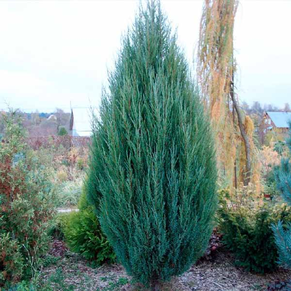
Ялівець Blue Arroou (140–160 см)
Один із найстрункіших та найвужчих сортів ялівцю, що формує виключно вертикальну, колоноподібну крону та має привабливу, насичено-блакитну або сіро-блакитну хвою.
1200 ₴
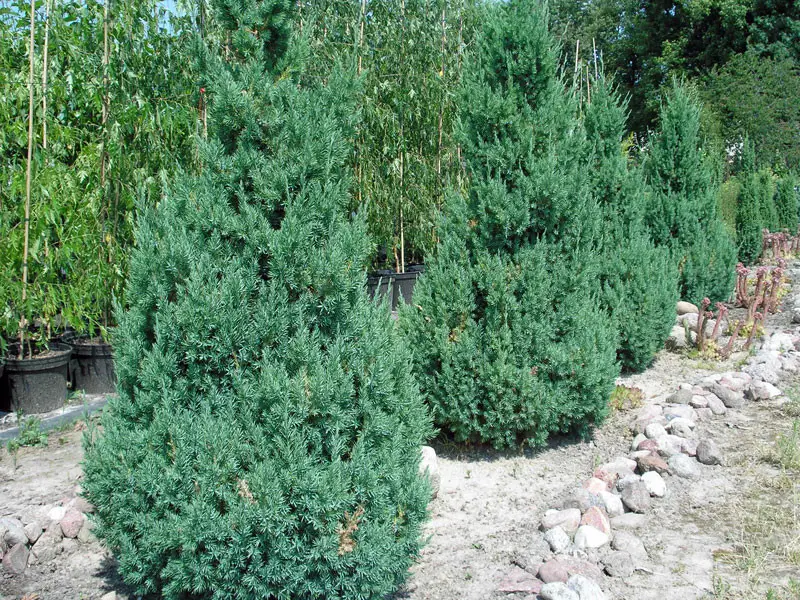
Ялівець Stricta (30 см)
Популярний, помірнорослий сорт, що формує густу, симетричну, ширококонусоподібну крону та має колючу, насичено-блакитно-зелену хвою, що надає йому витонченого вигляду.
450 ₴

Ялівець Juniperus sabina (30 см)
Витривалий, низькорослий та розлогий вид, який формує щільну килимоподібну або сланку крону з темно-зеленою, часто лускатою хвоєю та відомий своїм характерним ароматом.
450 ₴
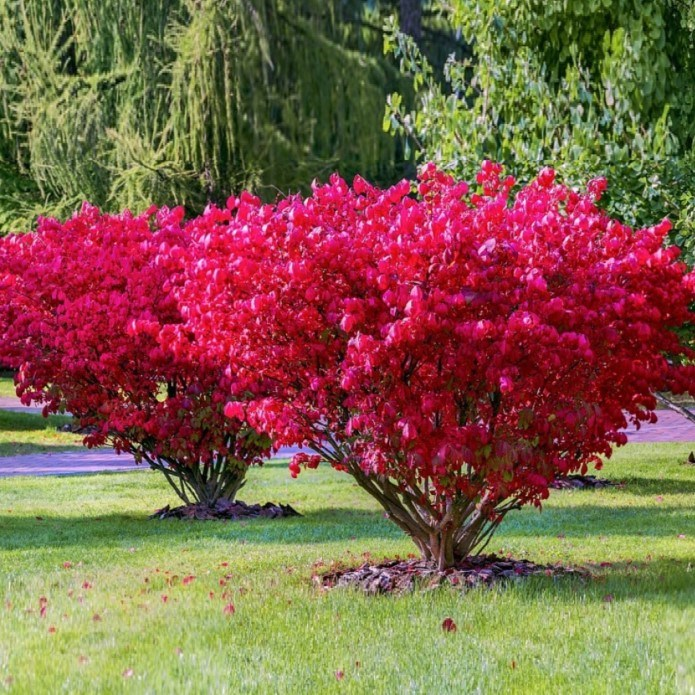
Бруслина крилата
Унікальний, листяний чагарник, найбільш відомий завдяки своєму неймовірно яскравому, вогненно-червоному осінньому забарвленню та особливим, пробковим наростам на гілках, які надають йому декоративності навіть узимку.
2500 ₴

Кортадерія біла
Велична багаторічна злакова рослина, яка формує великі, щільні купи зеленого листя та вражає своїми високими, пухнастими суцвіттями сріблясто-білого кольору, що з'являються восени.
450 ₴

Кортадерія рожева
Ефектна різновидність пампасного злаку, що утворює великі, архітектурні купи листя та випускає масивні, дуже пухнасті, ніжно-рожеві або світло-пурпурові суцвіття восени.
450 ₴

Кохія червона
Однорічна рослина з компактною, симетричною, яйцеподібною або колоноподібною формою, яка протягом літа має яскраво-зелену дрібну хвою, що восени набуває насиченого багряно-червоного кольору.
250 ₴
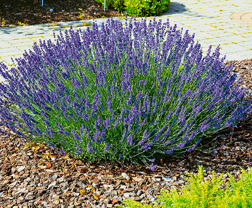
Лаванда
Високоароматний напівчагарник, який вирізняється сріблясто-сірим вузьким листям та численними колосоподібними суцвіттями насичено-фіолетового кольору, що наповнюють сад п'янким, заспокійливим ароматом у розпал літа.
150 ₴